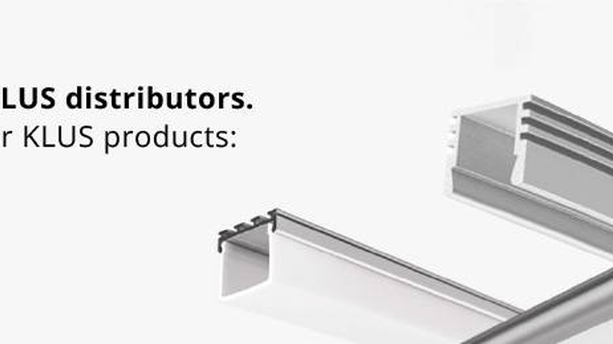
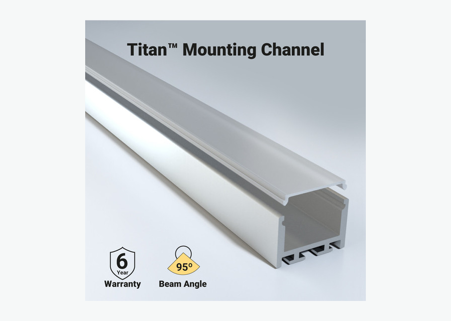
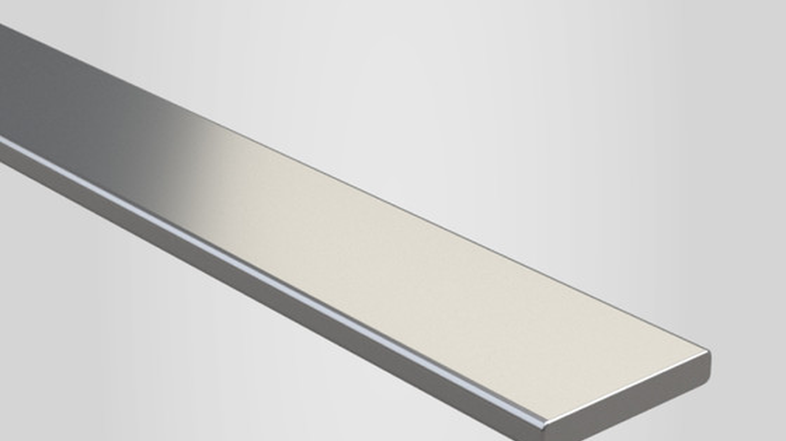

Especificar por instalação
Perfil de embutir, perfil de sobrepor, perfil de canto e slim.
Explorar
Coleção SEO • Prioridade Alta
Use perfil de alumínio para fita LED quando o projeto precisa de acabamento limpo, melhor dissipação de calor e luz mais uniforme. Escolha modelos de embutir, sobrepor, canto, slim ou com difusor para marcenaria, sancas, vitrines e iluminação arquitetural.
Mapa técnico
Estrutura adaptada para SEO B2B em português do Brasil, com navegação por produto, aplicação, especificação técnica e acessórios do sistema.
Perfil de embutir, perfil de sobrepor, perfil de canto e slim.
ExplorarBranco, preto, alumínio natural e difusor leitoso.
ExplorarMarcenaria, sanca, vitrine, cozinha, banheiro e móveis.
ExplorarFita LED, fita LED COB, conectores e fonte.
ExplorarProdutos e filtros
Palavra-chave principal: perfil para fita de led. Secundárias: perfil fita de led, perfil de aluminio para fita de led, perfil de embutir para fita de led, perfil de sobrepor para fita de led.

Acabamento nivelado em gesso, marcenaria e móveis.

Instalação prática em prateleiras, armários e retrofit.

Luz orientada em vitrines, armários e bancadas.

Guia de especificação
O perfil de alumínio melhora o acabamento visual e ajuda a dissipar o calor da fita LED. Isso é importante em instalações contínuas, móveis planejados, sancas, vitrines e projetos comerciais, onde a fita precisa ficar protegida e alinhada. O perfil de embutir é indicado quando a instalação deve ficar nivelada com a superfície. O perfil de sobrepor é mais simples de instalar e funciona bem em prateleiras, armários e retrofit. Já o perfil de canto ajuda em instalações anguladas. Verifique largura interna, largura da fita, tipo de difusor, tampas e presilhas.
Aplicações
As páginas de aplicação devem receber links internos desta coleção para capturar tráfego de cauda longa e orientar o comprador por ambiente.
Armários, nichos, painéis e prateleiras com acabamento limpo.
Planejar aplicaçãoLuz protegida e alinhada para exposição comercial.
Planejar aplicaçãoPerfis embutidos para linhas discretas e profissionais.
Planejar aplicaçãoFAQ técnico
Respostas curtas ajudam o usuário a decidir e também estruturam conteúdo para rich results quando a plataforma permitir FAQPage schema.
Ele ajuda na dissipação de calor, contribuindo para uma instalação mais estável.
Use perfil com largura compatível e difusor adequado ao efeito desejado.
Embutir entrega acabamento integrado; sobrepor é mais prático em instalações prontas.
O difusor protege a fita e suaviza a luz, reduzindo pontos visíveis.
Cotação B2B
Envie comprimento, tensão, temperatura de cor, ambiente de uso e prazo. Nossa equipe ajuda a combinar produto, fonte, perfil, conector e controle corretos.